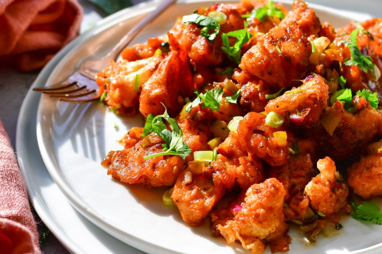

<html>
  <head>
    <title>Passport to India</title>
    <link rel="stylesheet" href="navbar.css">
  </html>
  <body>
    <ul id="topNav">
      <li><a href="contactpage.html">CONTACT</a></li>
      <li><a href="aboutpage.html">ABOUT</a></li>
      <li><a href="index.html">HOME</a></li>
    </ul>

    <ul id="menuNav">
      <li><a href="chickenpakora.html">Chicken Pakora</a></li>
      <li><a href="gobimanchurian.html">Gobi Manchurian</a></li>
      <li><a href="chickentikka.html">Chicken Tikka Masala</a></li>
      <li><a href="mangokulfi.html">Mango Kulfi</a></li>
      <li><a href="gulabjamun.html">Gulab Jamun</a></li>
    </ul>

<!--Restaurant Contents, Changes for the various pages-->

    <div id=para>
        <center>
            <h1 id="GobiManchurian">Gobi Manchurian</h1>
            
            <p>Gobi Manchurian is a dish that is a nice mix between sweet and savory.</p>
            <p>This dish is made out of cauliflower and manchirian sauce.</p>
            <p>The crispy and delicious appetizer is very popular in India.</p>
            <br>$11.49/plate
            <br>
            <br>
            <br>
            <br>
            <br>
            <br>
            <br>
            <br>
            <p>Created By: Navya Khandavalli Updated: Oct 2020</p>
        </center>
